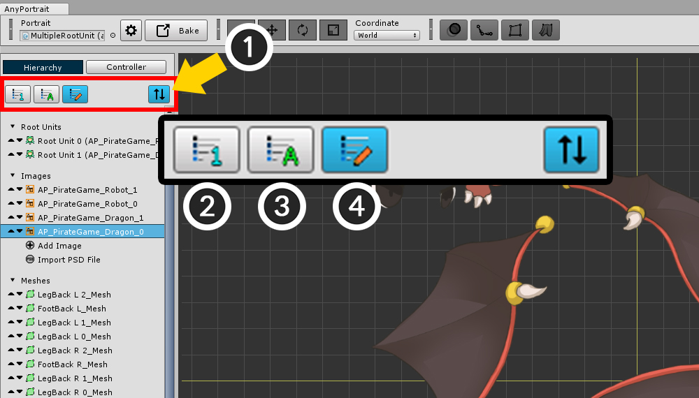

AnyPortrait > 메뉴얼 > Hierarchy UI
Hierarchy UI
1.2.0

에디터의 왼쪽에는 Hierarchy UI가 위치하고 있습니다.
Hierarchy UI에서는 작업 중인 Portrait에 속한 모든 객체들을 볼 수 있습니다.

Hierarchy UI의 상단에는 필터 아이콘들이 있습니다.
객체들이 너무 많은 경우 특정 종류의 객체들을 숨기는 것이 가능합니다.

Hierarchy UI의 객체들의 출력 순서를 바꿀 수 있습니다.
(1) 정렬 모드 버튼을 누릅니다.
정렬 모드가 켜지면 필터 버튼들이 사라지고 정렬 방식 버튼들이 나타납니다.
(2) "생성 순서"로 정렬됩니다.
(3) "이름 순서"로 정렬됩니다.
(4) "사용자 정의 방식"으로 정렬됩니다.
"사용자 정의 방식"으로 정렬하는 경우 기본값은 "생성 순서"와 동일합니다.

"생성 순서"로 정렬한 상태입니다.

"이름 순서"로 정렬하였습니다.
이 방식은 영문, 숫자의 이름인 경우 정렬이 잘 됩니다.

"사용자 정의 방식"으로 정렬하였습니다.
기본적으로는 "생성 순서"와 동일하지만, 사용자가 리스트의 왼쪽에 등장하는 버튼을 눌러서 순서를 바꿀 수 있습니다.

"사용자 정의 방식"은 단순히 순서를 변경하는 기능 뿐만아니라 루트 유닛(Root Unit)의 순서를 바꾸는 기능도 가지고 있습니다.
루트 유닛의 순서를 변경하면 실제로 루트 유닛의 인덱스가 바뀝니다.